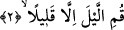

esnâda Peygamber Efendimiz (s.a.) onun başucuna gelerek kendisine “; yâni
“kalk ey toprağa bürünen”[148] diye seslenmişti. Bu seslenişiyle Peygamber (s.a.) bir
yandan kızına öfkelenen Hz. Ali’yi kınamadığına işâret etmiş, diğer yandan da kendisine
latifede bulunmuştu.
Yine Peygamber (s.a.) Efendimiz’in uyumakta olan Hz. Huzeyfe’ye; “, “kalk
ey uyuyan” [149] demesi de bu konuya başka bir örnektir. Bu hitâba muhatap olan Hz.
Huzeyfe o esnâda uyumakta idi. Peygamber (s.a.) Efendimiz bu sözüyle bir yandan
Huzeyfe’ye latifede bulunmuş, diğer yandan kendisini azarlayıp kınamadığını ifâde
etmek istemiştir.
İşte Allah’ın Hz. Peygamber (s.a.)’e “Ey bürünen” diye hitâb etmesi bir latife ve
ünsiyet kurma ifâdesidir. Böylece Peygamber (s.a.)’e kendisini azarlamadığı
hissettirilmiş olmaktadır.
İkinci faydasına gelince; bu da geceleyin örtüsüne bürünüp uyuyan herkese gece
namazına kalkmaları ve Allah Teâlâ’yı zikretmeleri için bir tenbih, bir uyarıdır. Çünkü -
burada olduğu gibi- herhangi bir fiili işlemekte olan kimse o fiilden türetilen bir isimle
anılır ve buna muhâtap olursa o fiili yapan başkaları da aynı şekilde o hitâba muhâtap
olurlar.
Fethurrahmân’da şöyle deniyor: “Ey bürünen ve benzeri” ifâdelerde olduğu gibi
Peygamber (s.a.)’e özel olarak gelen hitâb aynı zamanda onun ümmetine de yapılmış
genel bir hitâbdır. Bu emrin ümmetine değil de, Hz. Peygamber’e mahsus olabilmesi
için emrin genel olmadığına ve peygambere özel olduğuna delil bulunmalıdır. Bu görüş
İmam Ahmed’in, Hanefi ve Mâliki âlimlerinin görüşleridir. Şâfiî âlimlerinin ekserisi
ise bu kanâatte değillerdir. Onlara göre herkese şâmil olduğuna dâir bir delil olmadıkça
peygambere yapılan özel hitâblar sâdece onu bağlar ve o hitâbda yer alan isteklerin
bütün müminlere şâmil olması için özel bir delil gerekir.
Peygamber (s.a.)’in ümmetinden bir tek ferde olan hitâbı acaba başkalarına da şâmil
midir? Bu soruya Şafii ve Hanefi âlimleri ile ekserî âlimler “hayır” şeklinde cevap
vermişlerdir. Buna karşılık Hanbelî âlimlerinden Ebu’l-Hattâb, “eğer bu hitâb bir
cevabın sonucunda gelmişse bütün ümmete şâmil olur, eğer böyle değilse şâmil olmaz”
diye cevap vermiştir.
2. Birazı hâriç, geceleri kalk namaz kıl.
“Gecenin birazı hâriç olmak üzere kalk” öyle bürünüp örtünme, uyuma. Bu hâli
bırak daha iyi olanı yap, gece namaza kalk.
“Gece” anlamına gelen “leyl” kelimesinin mansup olması zarf olduğu/vakit bildirdiği